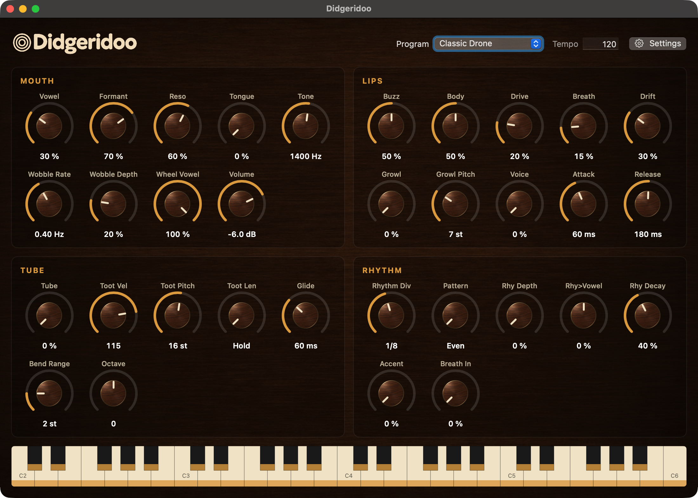

Začínáme
- Stáhněte obraz disku ze stránky ke stažení a otevřete ho.
- Přetáhněte Didgeridoo do složky Aplikace a spusťte ji odtamtud.
- Zahrajte nízkou notu na MIDI klaviatuře, nebo klikněte na klaviaturu ve spodní části okna. Aplikace poslouchá všechna připojená MIDI zařízení, dokud si v Settings nevyberete jedno.
- Chcete-li nástroj používat v programu jako Ableton Live nebo Logic Pro, otevřete Settings a klikněte na Install Audio Unit (viz Plugin Audio Unit).
Hlavní okno

- 1Název
- Název nástroje.
- 2Program, Tempo, Settings
- Program načte jeden ze šesti vestavěných zvuků. Přepíše všechny knoby a utne znějící notu; vlastní úpravy se do programu neukládají. Tempo (20–300 BPM) určuje rychlost rytmického pulzu. Settings otevře nastavení MIDI vstupu, zvukového výstupu a instalaci pluginu Audio Unit.
- 3Mouth
- Tvar úst: jakou samohlásku dron vyslovuje a jak se pohybuje. Viz Mouth.
- 4Lips
- Zdroj zvuku: rty, dech, hlas, ladění a to, jak noty začínají a končí. Viz Lips.
- 5Rhythm
- Pulz synchronizovaný s tempem a rozsah pitch bendu. Viz Rhythm.
- 6Klaviatura
- Kliknutím na klávesu ji zahrajete. Kliknutí u horního okraje klávesy hraje tiše; kliknutí u spodního okraje je nejsilnější úhoz a notu přefoukne.
Otáčení knobem
Táhněte knob nahoru nebo dolů. S klávesou Shift se hodnota mění jemně. Dvojklik vrátí knob na hodnotu aktuálního programu. Aplikace si knoby, program i tempo pamatuje mezi spuštěními.
Hraní
Didgeridoo hraje vždy jen jednu notu. Držená klávesa hraje dron; druhá klávesa na něj plynule přeladí (Glide) a po jejím puštění se ladění vrátí na klávesu, kterou stále držíte. Nejpřirozeněji znějí nízké noty: skutečné nástroje se pohybují kolem C1–G1 (MIDI noty 36–43).
- Silný úhoz
- Velocity rovná hodnotě Toot Vel nebo vyšší notu přefoukne: skočí o Toot Pitch půltónů výš a zní jasně, trubkově.
- Mod wheel
- Otevírá ústa: posouvá samohlásku směrem k „i“ až o hodnotu Wheel Vowel.
- Aftertouch
- Přidává chrapot nad hodnotu knobu Growl.
- Pitch bend
- Ohýbá ladění až o Bend Range půltónů.
- Sustain pedál
- Podrží dron i po puštění kláves.
Mouth (ústa)
- Vowel (0–100 %)
- Tvar úst, od „u“ na nule přes „o“, „a“ a „e“ po „i“ na stovce.
- Formant (0–100 %)
- Kolik rezonancí samohlásky se přimíchá do zvuku. Na nule je dron holý.
- Reso (0–100 %)
- Ostrost rezonancí samohlásky: vyšší hodnoty znějí hlasověji a nosověji.
- Tone (200–8000 Hz)
- Dolní propust na přímém zvuku. Nižší hodnota je temnější.
- Wobble Rate (0,05–10 Hz)
- Rychlost pomalého, pravidelného pohybu samohlásky.
- Wobble Depth (0–100 %)
- Míra tohoto pohybu. Nula ho vypne.
- Wheel Vowel (0–100 %)
- O kolik mod wheel posune samohlásku.
- Volume (−40 až +6 dB)
- Výstupní hlasitost.
Lips (rty)
- Buzz (0–100 %)
- Zvuk rtů, od kulaté pilové vlny na nule po tenký, nosový pulz na stovce.
- Body (0–100 %)
- Rezonance na hrané výšce, která dává dronu váhu.
- Drive (0–100 %)
- Saturace na výstupu: přidá drsnost a vyrovná hlasitost.
- Breath (0–100 %)
- Šum dechu procházející trubicí a ústy.
- Growl (0–100 %)
- Hlas zpívaný do trubice, který dron zdrsní a rozechvěje.
- Growl Pitch (0–24 st)
- Interval tohoto hlasu nad dronem v půltónech.
- Drift (0–100 %)
- Pomalé náhodné kolísání ladění, nejvýše asi o třetinu půltónu.
- Glide (0–1000 ms)
- Jak dlouho trvá sklouznutí z jedné noty na druhou.
- Attack (5–2000 ms)
- Jak rychle nota nastoupí.
- Release (10–3000 ms)
- Jak rychle po puštění klávesy dozní.
- Toot Vel (64–127, Off)
- Velocity, od které se nota přefoukne. Úplně nahoře („Off“) je přefuk vypnutý.
- Toot Pitch (7–24 st)
- O kolik půltónů přefouknutá nota vyskočí nad hranou klávesu.
Rhythm (rytmus)
Pulz začíná na každém kroku v plné síle a do dalšího kroku slábne. Když jsou Rhy Depth i Rhy>Vowel na nule, nedělá nic. V aplikaci běží v tempu nastaveném v poli Tempo; v hostitelském programu sleduje skladbu.
- Rhythm Div (1/64 až 2/1)
- Délka jednoho kroku, včetně triolových (T) a tečkovaných (D) hodnot.
- Rhy Depth (0–100 %)
- O kolik hlasitost mezi pulzy klesne.
- Rhy>Vowel (−100 až +100 %)
- O kolik každý pulz posune samohlásku: kladné hodnoty směrem k „i“, záporné k „u“.
- Rhy Decay (0–100 %)
- Tvar pulzu, od dlouhého náběhu na nule po krátký úder na stovce.
- Bend Range (0–12 st)
- Rozsah pitch bendu v půltónech.
Nastavení
- MIDI input › Device
- All devices (výchozí, všechna zařízení), None (žádné), nebo jedna připojená klaviatura či kontrolér. Vybrané zařízení, které odpojíte, zůstane v seznamu s poznámkou „not connected“; jakmile ho znovu připojíte, aplikace ho začne zase poslouchat.
- MIDI input › Channel
- All channels (všechny kanály) nebo jeden z kanálů 1–16; zprávy na ostatních kanálech se ignorují.
- MIDI port „Didgeridoo“
- Dokud aplikace běží, mohou jiné aplikace posílat MIDI do portu Didgeridoo. Je vždy zapnutý a řídí se nastavením kanálu.
- Audio output › Device
- System default (výchozí výstup systému) nebo konkrétní zvukové zařízení. System default sleduje výstup zvolený v macOS, i když se změní za běhu aplikace (například když připojíte sluchátka). Vybrané zařízení, které odpojíte, zůstane v seznamu s poznámkou „not connected“: zvuk jde do výchozího výstupu systému, dokud zařízení znovu nepřipojíte.
- Audio output › Channels
- Zobrazí se u vybraného zařízení se čtyřmi a více výstupy: dvojice kanálů, do které zvuk půjde. Nově vybrané zařízení začíná na první dvojici. Nástroj je mono; oba kanály nesou stejný signál.
- Audio Unit plug-in
- Ukazuje, jestli je plugin nainstalovaný a v jaké verzi; Install Audio Unit ho nainstaluje nebo aktualizuje.
Plugin Audio Unit
- V aplikaci otevřete Settings a klikněte na Install Audio Unit. Soubor Didgeridoo.component se zkopíruje do ~/Library/Audio/Plug-Ins/Components.
- Restartujte hostitelský program nebo ho nechte znovu prohledat pluginy. V Abletonu Live musí být Audio Units zapnuté v Settings › Plug-Ins.
- Nástroj se objeví jako Didgeridoo od výrobce Jiri Pisa mezi nástroji Audio Unit.
Plugin má stejný zvuk, stejných 25 parametrů a stejných šest programů (jako tovární presety) jako aplikace. Vlastní okno zatím nemá: hostitelský program zobrazí své standardní zobrazení parametrů, rozdělené do skupin Mouth, Lips a Rhythm. Každý parametr lze automatizovat a zvuk se ukládá s projektem. Rytmický pulz sleduje tempo a pozici ve skladbě.
Po aktualizaci aplikace klikněte na Install Audio Unit znovu, aby se aktualizoval i plugin.
Aktualizace
Při každém spuštění se Didgeridoo podívá, jestli existuje novější verze, a pokud ano, nabídne ji; bez vašeho souhlasu se nic nenainstaluje. Didgeridoo › Check for Updates… se zeptá hned.